Travel planning can be spread across maps, booking platforms, social media and review websites.
AI travel planner / 8-week self-initiated project
Designing an AI Travel Planner That Turns Complex Decisions Into a Clear, Personalised Journey
Picsee is a product concept for turning fragmented travel research into an editable itinerary. I defined the product direction, developed the design hypotheses and designed the end-to-end experience.
My role
Product Strategy, UX Research, UX/UI Design and Prototyping
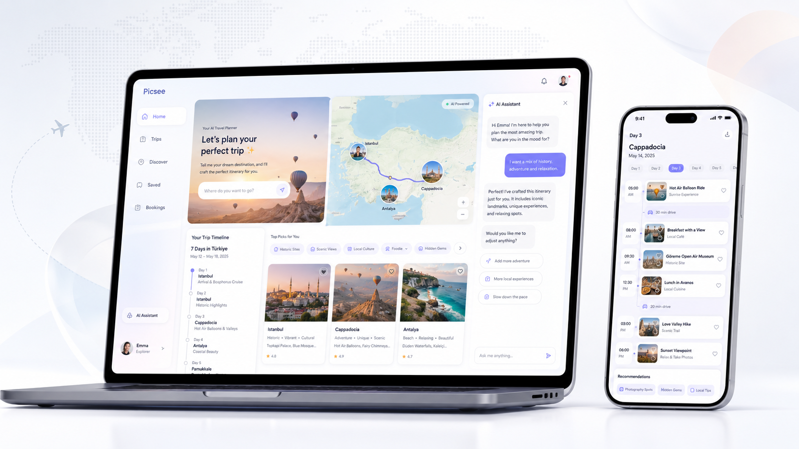
Project snapshot
A concept for making travel planning more understandable and controllable.
Explore how an AI-assisted flow could turn preferences into an understandable, editable travel plan.
Product framing, research approach, design hypotheses, prioritisation, information architecture, interface design and prototyping.
A self-initiated concept evaluated through scenarios, not a production product with user metrics.
The problem
Travel planning can involve too much disconnected information and too little decision support.
People may need to combine inspiration, location context, reviews, prices and schedules before deciding on a single activity.
Inspiration→Research→Comparison→Scheduling→Booking→Replanning
Picsee explores an AI-assisted planning flow that makes suggestions useful without making them feel final.
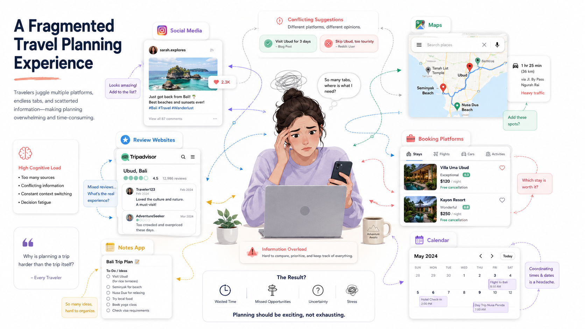
Research approach
Developing a product direction through structured secondary research and evaluation.
As a self-initiated concept project, Picsee did not begin with formal user interviews or a large research sample. The initial direction was developed through desk research, competitive review, journey mapping and design hypotheses.
Desk researchCompetitive analysisJourney mappingProduct & UX design hypothesesScenario-based evaluation
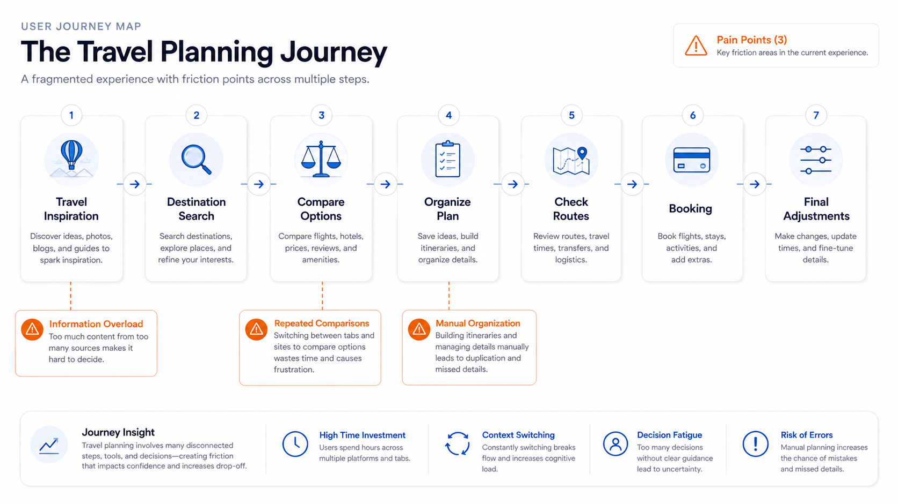
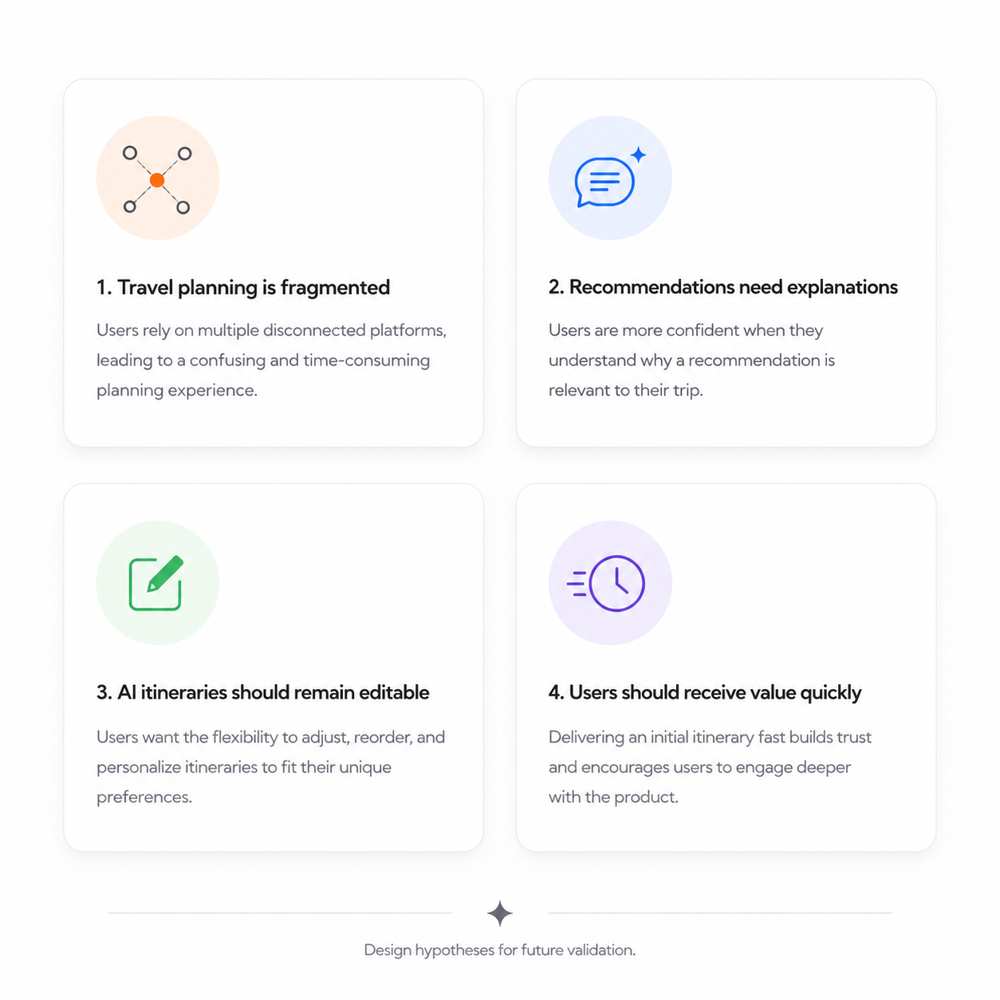
Design hypotheses
What the concept needed to account for before formal validation.
Planning is fragmented
Travel planning is fragmented across multiple platforms.
Reasoning builds trust
Users may trust recommendations more when the reasoning is visible.
AI output stays editable
AI-generated itineraries should remain editable.
Show value early
Showing early value may be more effective than using a long onboarding questionnaire.
These statements are design hypotheses and have not yet been validated through formal user research.
Scenario Need “I want help creating a realistic travel plan, but I still want to understand and control the decisions.”Design scenario — not a participant quote.
Competitive analysis
Four external products were reviewed to locate the concept opportunity.
| External product | Inspiration | Personalisation | Route awareness | Editable itinerary | Recommendation rationale | Conversational refinement |
|---|---|---|---|---|---|---|
| Google Travel | Yes | Limited | Yes | Limited | Limited | No |
| TripAdvisor | Yes | Limited | Limited | No | Community-led | No |
| Wanderlog | Yes | Limited | Yes | Yes | Limited | No |
| ChatGPT | Yes | Yes | Limited | Text-led | Variable | Yes |
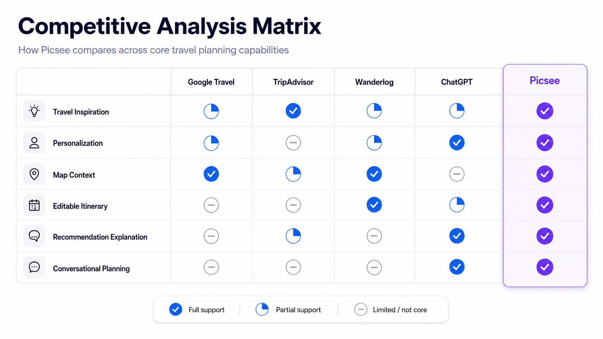
Picsee concept directionCombine AI-generated planning with a transparent, editable and visual travel workflow.
Process / design principles
Four principles translated the hypotheses into product decisions.
Reduce inputs
Ask only for information that meaningfully changes a plan.
Explain recommendations
Show why a place or activity may be relevant to the traveller.
Keep users in control
Make each AI suggestion editable, replaceable or removable.
Design for iteration
Make replanning a normal part of the experience, not an error state.
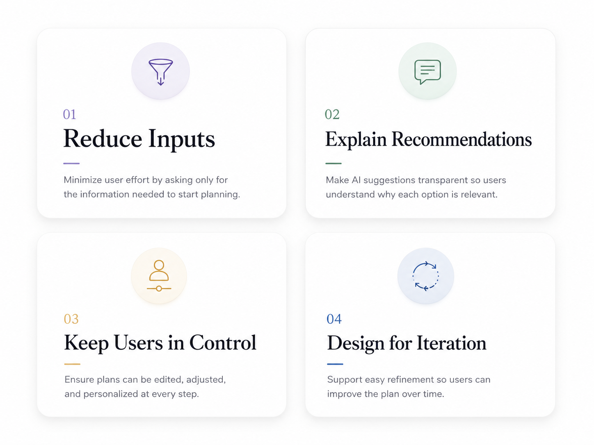
End-to-end flow
AI assists with interpretation and structure. The traveller reviews and changes the plan.
- Enter destination
- Select dates
- Choose preferences AI interprets
- Define budget & pace
- Generate itinerary AI structures
- Review recommendations
- Replace or reorder User controls
- Check route & timing
- Save or share
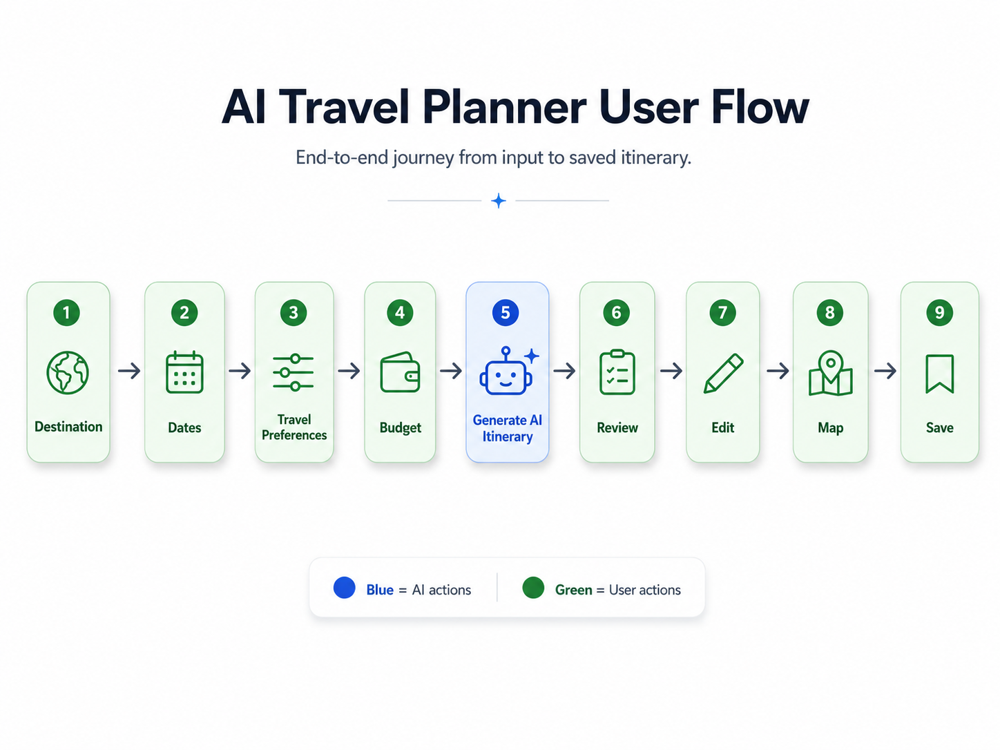
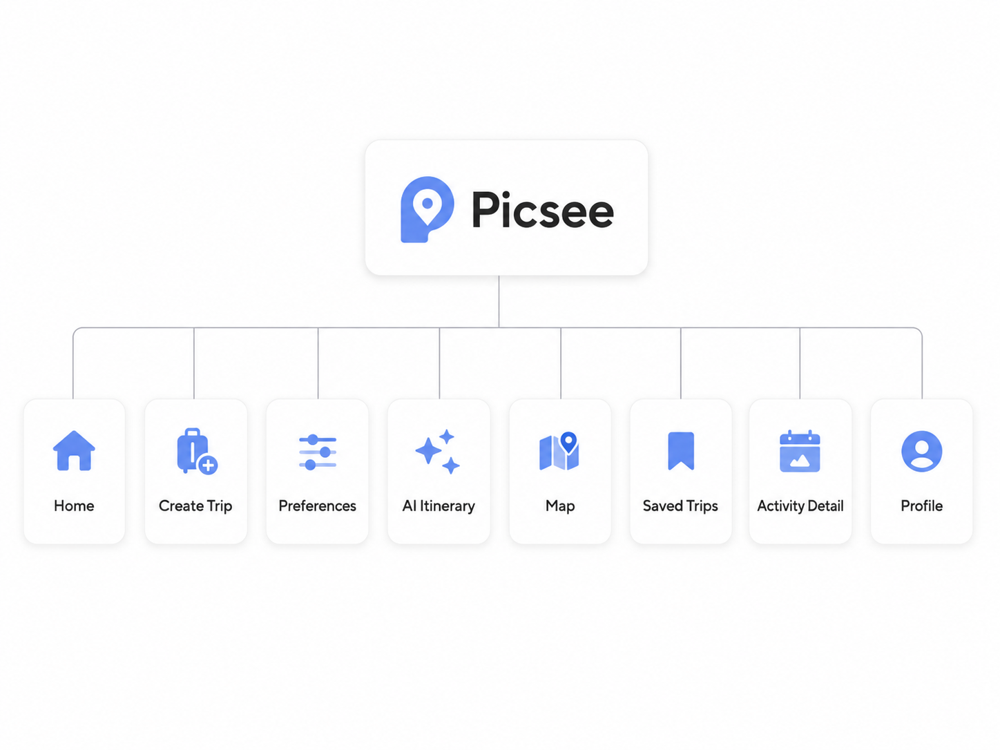
Iteration
Using scenario walkthroughs to improve clarity and control.
Too many onboarding questions
- Observation
- The early flow delayed value by asking for too many inputs before generating a plan.
- Change
- Reduced required inputs and moved optional preferences to later stages.
AI output felt like a black box
- Observation
- The concept needed to show why an activity appeared in a proposed itinerary.
- Change
- Added recommendation reasons, preference tags and contextual explanations.
Editing was not visible enough
- Observation
- The itinerary could appear fixed rather than open to revision.
- Change
- Added replace, reorder, remove and conversational refinement actions.
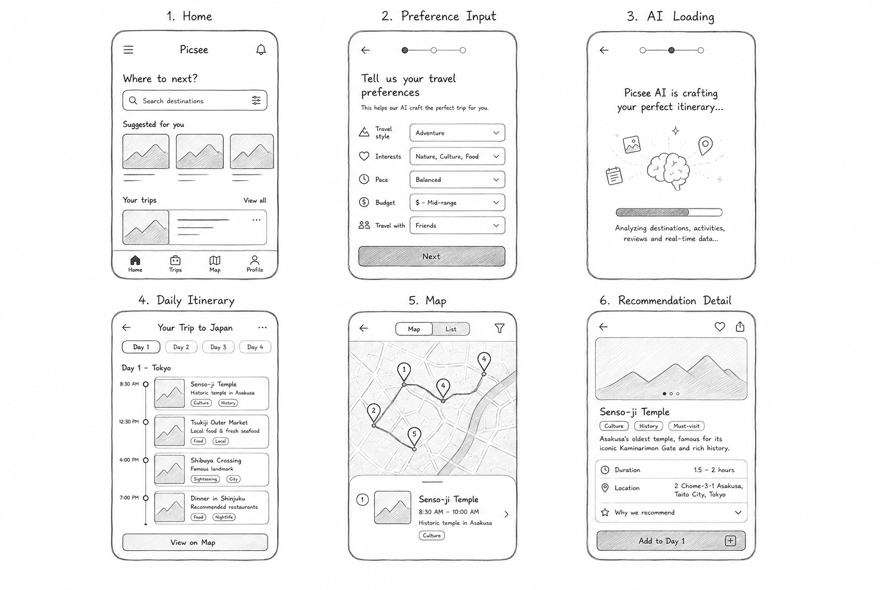
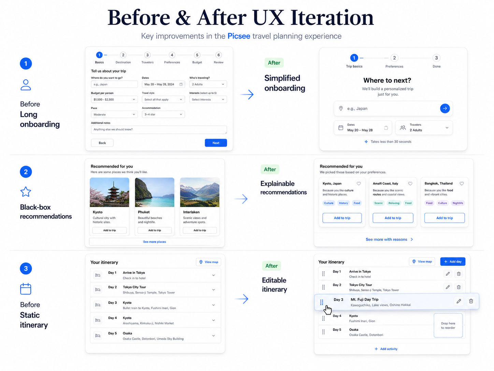
Final solution
A concept interface for a recommendation, an explanation and a user decision.
01
Preference Setup
A lightweight flow collects destination, dates, budget, pace and interests.
02
AI-Generated Itinerary
A day-by-day plan balances interests, location and available time.
03
Map and Route View
Schedule and map context make distance and daily feasibility visible.
04
Editable Schedule
Replace, reorder or remove actions keep the draft open to revision.
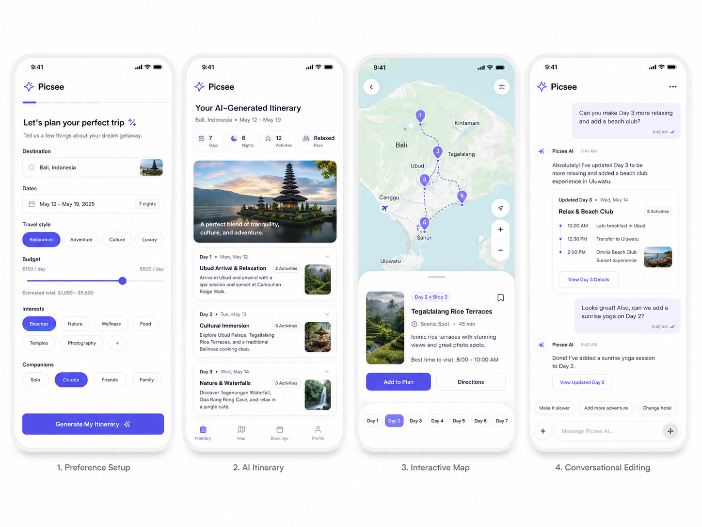
My role
What I personally owned.
- Framed the problem and concept direction
- Defined the product positioning
- Prioritised the first product scope
- Connected decisions to design hypotheses
- Structured desk research
- Reviewed comparable external products
- Mapped the existing planning journey
- Documented product and UX hypotheses
- Created information architecture
- Designed the end-to-end user flow
- Developed wireframes and interface concepts
- Designed the editable itinerary experience
- Built interactive concept flows
- Ran scenario-based walkthroughs
- Iterated interaction priorities
- Defined next validation questions
My main contribution was turning a broad idea—an AI travel planner—into a focused product concept with explicit assumptions, a prioritised workflow and a clear future validation plan.
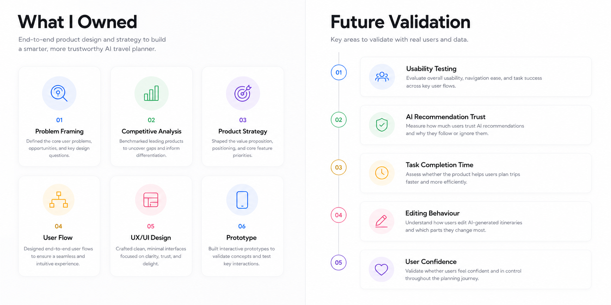
Research limitations
What this concept does not claim.
- No formal user interviews were conducted
- No production data was available
- Findings remain hypotheses
- No formal usability testing results are reported
- Future testing is required before validating product impact
- No user metrics or preference claims are reported
Design deliverables
What was created during the eight-week project.
- Complete end-to-end product concept
- Competitive analysis
- User journey and user flow
- Information architecture
- Wireframes
- High-fidelity interface
- Interactive prototype
- Future validation framework
Future validation plan
What I would validate next.
- Test whether users can create an itinerary efficiently
- Measure whether explanations improve recommendation understanding
- Observe how frequently users edit AI-generated suggestions
- Evaluate perceived control and confidence
- Identify which preference inputs have the greatest impact
The next step is to turn the current hypotheses into a focused validation plan before making claims about product impact.